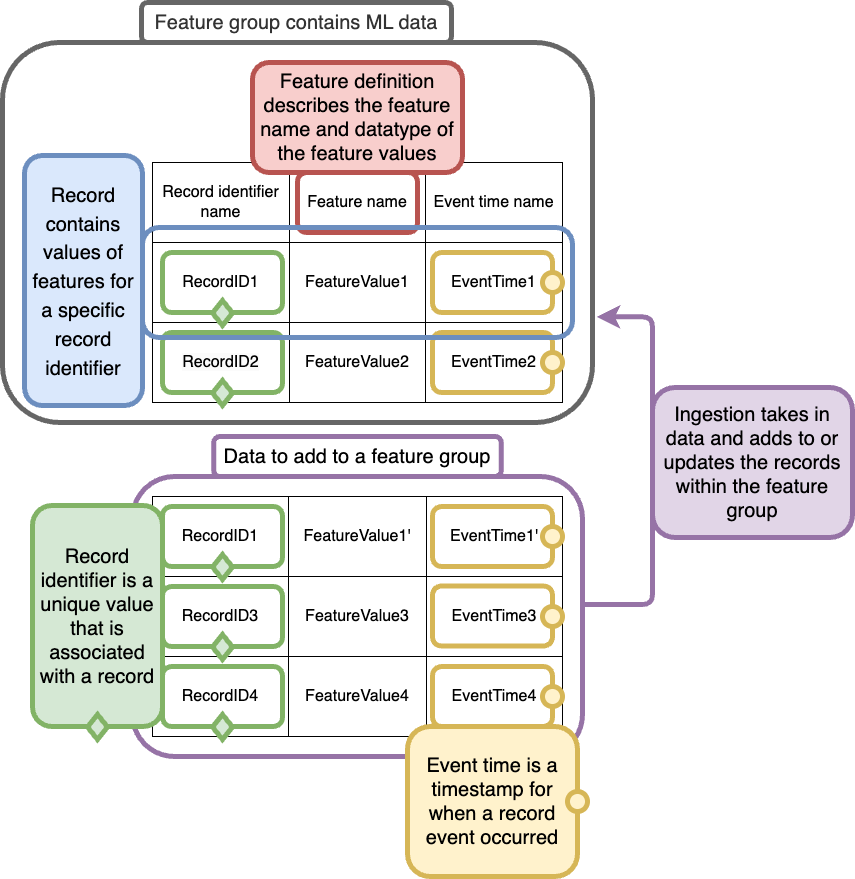

Feature Store concepts
We list common terms used in Amazon SageMaker Feature Store, followed by an example diagram to visualize a few concepts:
-
Feature Store: Storage and data management layer for machine learning (ML) features. Serves as the single source of truth to store, retrieve, remove, track, share, discover, and control access to features. In the following example diagram, the Feature Store is a store for your feature groups, which contains your ML data, and provides additional services.
-
Online store: Low latency, high availability store for a feature group that enables real-time lookup of records. The online store allows quick access to the latest record via the
GetRecordAPI. -
Offline store: Stores historical data in your Amazon S3 bucket. The offline store is used when low (sub-second) latency reads are not needed. For example, the offline store can be used when you want to store and serve features for exploration, model training, and batch inference.
-
Feature group: The main resource of Feature Store that contains the data and metadata used for training or predicting with a ML model. A feature group is a logical grouping of features used to describe records. In the following example diagram, a feature group contains your ML data.
-
Feature: A property that is used as one of the inputs to train or predict using your ML model. In the Feature Store API a feature is an attribute of a record. In the following example diagram, a feature describes a column in your ML data table.
-
Feature definition: Consists of a name and one of the data types: integral, string or fractional. A feature group contains a list of feature definitions. For more information on Feature Store data types, see Data types.
-
Record: Collection of values for features for a single record identifier. A combination of record identifier and event time values uniquely identify a record within a feature group. In the following example diagram, a record is a row in your ML data table.
-
Record identifier name: The record identifier name is the name of the feature that identifies the records. It must refer to one of the names of a feature defined in the feature group's feature definitions. Each feature group is defined with a record identifier name.
-
Event time: Timestamp that you provide corresponding to when the record event occurred. All records in a feature group must have a corresponding event time. The online store only contains the record corresponding to the latest event time, whereas the offline store contains all historic records. For more information on event time formats, see Data types.
-
Ingestion: Adding new records to a feature group. Ingestion is typically achieved via the
PutRecordAPI.
The following example diagram conceptualizes a few Feature Store concepts:

The Feature Store contains your feature groups and a feature group contains your ML data. In the example diagram, the original feature group contains ML data (table) contains three features (each describing a column) and two records (rows).
-
A feature (describes a column) is made up of a feature definition, that describes the feature name and data type of the feature values, that are associated with records.
-
A record (row) must be uniquely identified by its record identifier (diamond markers) and include the event time (circle markers) of when the record event occurred.
Ingestion is the action of adding new data to a feature group. Records are added to a feature group differently, depending on if you are ingesting into the online store or offline store. While ingesting new data into a feature group and a new record identifier does not already exist within the feature group, the record is added for both stores. While ingesting data into a feature group and a record identifier already exists within the feature group:
-
Only the latest event time is kept in the online store.
-
All records are kept and act as historical records in the offline store.